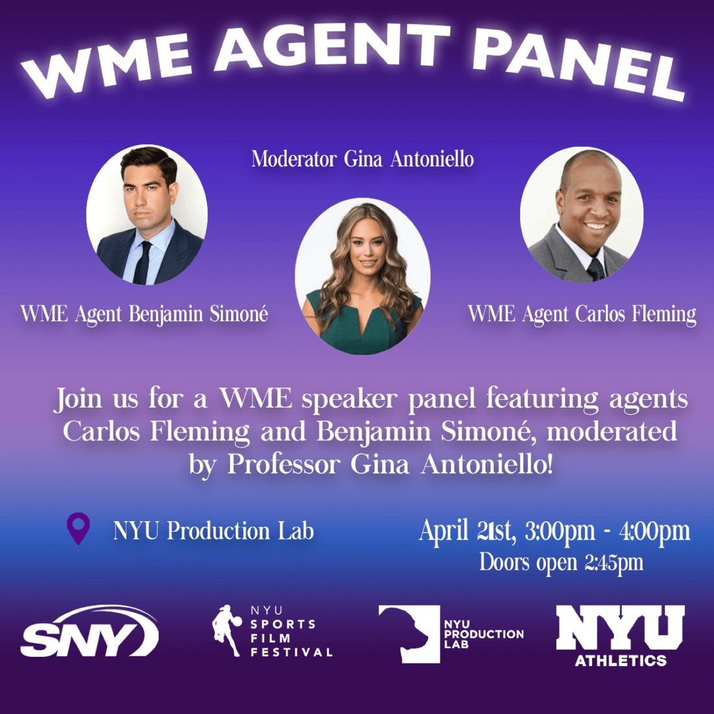
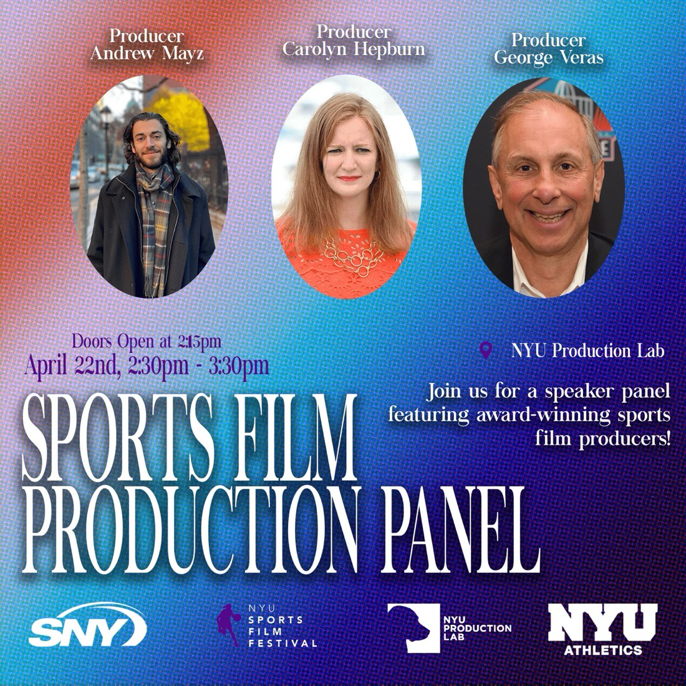
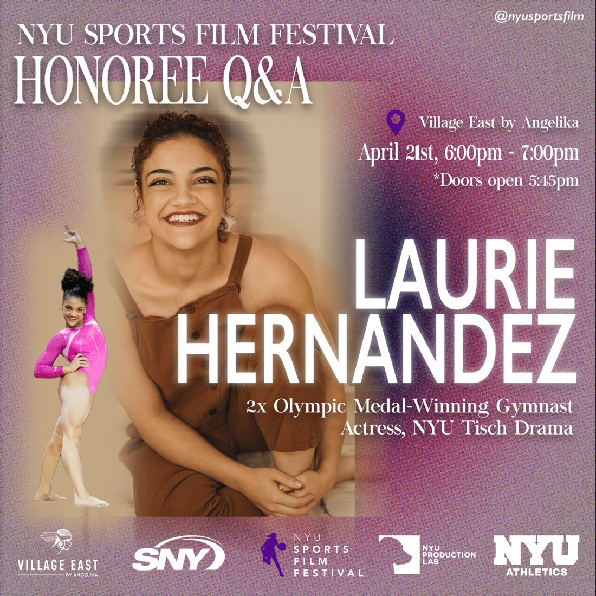
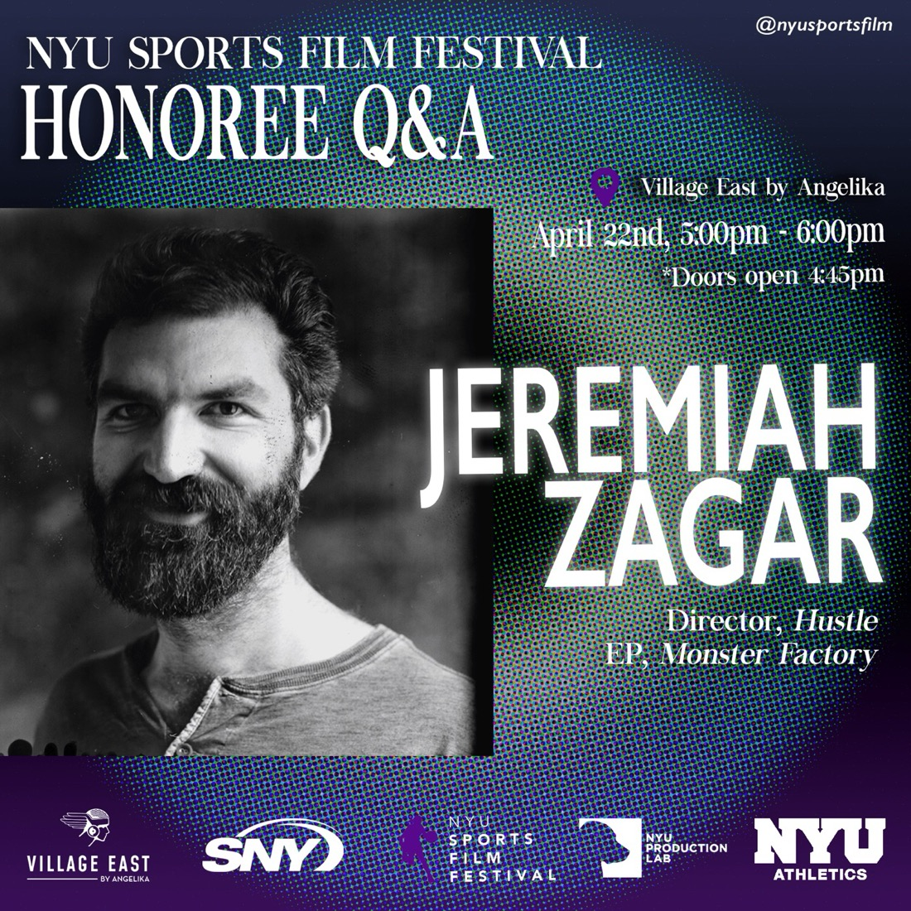

Interception: Jayne Kennedy, American Sportscaster
Directed by Safiya Songhai
The tumultuous story of Jayne Kennedy, the first African-American woman to boldly run interception on the racial lines of American sportscasting.
April 21–22, 2023 · Village East by Angelika & NYU Production Lab
The 3rd Annual festival screened 12 official selections at the Village East by Angelika, with honoree Q&As featuring Olympic gymnast Laurie Hernandez and director Jeremiah Zagar.

In 2023, the festival screened 12 official selections from around the world at the Village East by Angelika, where honoree Q&As were held with Laurie Hernandez and Jeremiah Zagar.
Speaker panels featured WME agents Carlos Fleming and Benjamin Simoné, and award-winning producers Carolyn Hepburn, George Veras, and Andrew Mayz. After the jury — including representatives from Point Road Productions and Cinetic Media — convened, the festival hosted a networking reception and awards ceremony.
The 3rd Annual SNY Special featured four award-winning films, event highlights, and director interviews, broadcasting eight times over August and September 2023. Four official selections went on to re-screen at the Catalyst Content Festival and Lake Placid Film Festival.


Safiya Songhai, director of Interception: Jayne Kennedy, American Sportscaster

Jason Adam Maselle, director of Fool’s Mate
Directed by Safiya Songhai
The tumultuous story of Jayne Kennedy, the first African-American woman to boldly run interception on the racial lines of American sportscasting.
Directed by Sania Bhatia
Tap dancer Sydney Barnas shares her story and passion for the art of dance.
Directed by Robert Daniel Martin
A young hockey player discovers he doesn’t fall in line with his new team’s warrior code when he must stay silent through a rite of passage that will expose his secret crush.
Directed by Jason Adam Maselle
Quincy is trying his best to get better at chess. When an unlikely opponent takes interest, he must decide if he’s ready to open himself up to the challenge.
Directed by Eric Welshenbaugh
Inside the Hall of Fame’s emotional tradition of knocking on the door of each newly elected member — a moment preserved forever in Canton, Ohio.
Directed by Florian Moses Bayer · Austria
Gery makes the leap from the youth soccer team to the testosterone-overloaded combat team, pushed from all sides into futures he isn’t sure he wants.
Directed by Alrick Brown
David Robinson, youngest son of Jackie Robinson, spent 35 years immersed in African tribal culture — where coffee became the fuel for his mission for social change.
Directed by Wojciech Lorenc
A seven-year-old Texas boxer steps into the ring in an allegory for the challenges faced by people of color and immigrants in the U.S.
Directed by Eric Zhang
A teenage boy struggles with his desire for better soccer gear.
Directed by Jesse Gi
A high school student looks to join his school baseball team by any means necessary.
Directed by Jesse Handsher (edited by Kyle Sykes)
Two legendary northeast Portland high school basketball teams and the African American community that houses them, as it struggles with gentrification.
Directed by Federico Russotto · Italy
Aureliano and Simone seem to belong to different planets. Their common language is fencing — and each lunge tests their talent and loyalty.
Directed by Rebekka Schlichting & co.
University of Kansas journalism seniors follow the nationally ranked Kansas City Kings basketball team to the 2022 national tournament.
Directed by Anestis Iosifidis
The true story of Chrysostomos, who overcame severe mental health struggles to win a 26km swimming race across Greece’s Toroneos Gulf.
Directed by Sebastian Alonso Carrillo
A documentary series on NYU Men’s Basketball as a new head coach and two D1 transfers chase the UAA title.
Directed by Jakob Roston
An Iranian-American cowboy wrangles horses and the past on his ranch.
Directed by Carter Wells
Runner Rik Zortman traces the names of children with cancer via GPS, inspiring thousands around the world.
Directed by Nathan Godwin
Basketball player Bennie Murray battles through a health crisis and injury to return to playing professionally.

Friday, April 21 · 3:00–4:00pm · NYU Production Lab
The 3rd Annual festival kicked off with WME agents discussing sports media and marketing, moderated by Professor Gina Antoniello.
Partner, WME
Represents talent including Serena Williams, David Beckham, and Questlove, and documentary production companies across the industry.
Department Head, WME Basketball
Has represented Venus Williams, Cam Newton, Christian Pulisic, and Michelle Wie, and now oversees 60+ NBA clients.
Moderator · Assistant Clinical Professor of Sport Management, NYU
A sports communications executive formerly with the XFL’s New York Guardians, the Brooklyn Nets, and the Golden State Warriors.

Saturday, April 22 · 2:30–3:30pm · NYU Production Lab
Day two opened with award-winning sports film producers sharing how they bring sports stories to the screen.
Producer, ESPN Films
An Emmy and Peabody-winning producer of over 50 titles, including One Child Nation and Life, Animated.
Former COO & Producer, Pro Football Hall of Fame
A 10-time Sports Emmy-winning producer and director of live events and documentaries.
Archival Producer
Archival producer and researcher whose credits include Netflix’s Bill Russell: Legend and HBO’s Hostages.

Friday, April 21 · 6:00–7:00pm · Village East by Angelika
Olympic gold and silver medalist at Rio 2016, Dancing with the Stars champion, and New York Times best-selling author. At the time of the festival, Laurie was studying drama at NYU Tisch while working as a gymnastics analyst for NBC.

Saturday, April 22 · 5:00–6:00pm · Village East by Angelika
Director of Hustle, starring Adam Sandler, which debuted at No. 1 on Netflix’s global top 10, and of the Sundance award-winning We the Animals. His documentary debut, In a Dream, was shortlisted for an Academy Award.
The 3rd Annual SNY Special featured four award-winning films, festival highlights, and director interviews, airing eight times in August and September 2023.